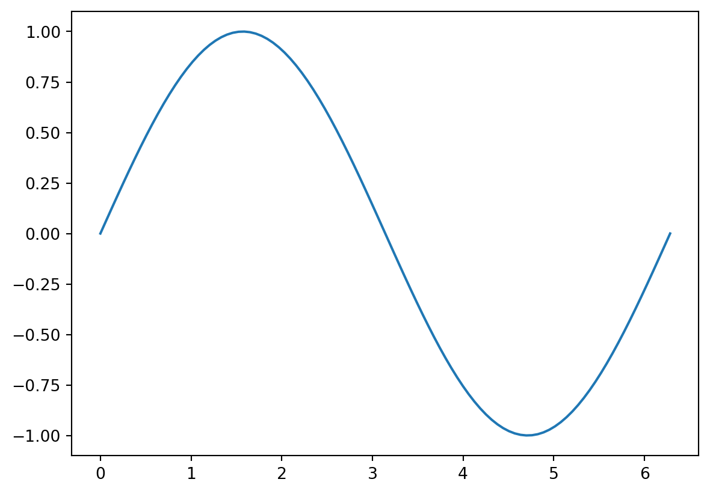

2Demo arXiv template
Son Tran ![]()
Abstract
This document is only a demo explaining how to use the template.
Introduction
This is an example of how to use this template to render journal articles. This template is inspired by the arXiv rticles template for rmarkdown, repurposed for the Quarto publishing system.
This quarto extension format supports PDF and HTML outputs. This template is primarily focused on generating acceptable \(\LaTeX\) outputs from Quarto, but renders an acceptable HTML output using the standard Quarto options.
Quarto
Quarto enables you to weave together content and executable code into a finished document. To learn more about Quarto see https://quarto.org.
Running Code
When you click the Render button a document will be generated that includes both content and the output of embedded code. You can embed code like this:
This format hide chunks by default, but you can set echo option to true locally in the chunk:

Markdown Basics
This section of the template is adapted from Quarto’s documentation on Markdown basics.
Text Formatting
| Markdown Syntax | Output |
|---|---|
|
italics and bold |
|
superscript2 / subscript2 |
|
|
|
verbatim code |
Headings
| Markdown Syntax | Output |
|---|---|
|
Header 1 |
|
Header 2 |
|
Header 3 |
Equations
Use $ delimiters for inline math and $$ delimiters for display math. For example:
| Markdown Syntax | Output |
|---|---|
|
inline math: \(E=mc^{2}\) |
|
display math: \[E = mc^{2}\] |
If assigned an ID, display math equations will be automatically numbered:
\[ \frac{\partial \mathrm C}{ \partial \mathrm t } + \frac{1}{2}\sigma^{2} \mathrm S^{2} \frac{\partial^{2} \mathrm C}{\partial \mathrm C^2} + \mathrm r \mathrm S \frac{\partial \mathrm C}{\partial \mathrm S}\ = \mathrm r \mathrm C \tag{1}\]
Other Blocks
| Markdown Syntax | Output |
|---|---|
|
|
|
Line Block |
Cross-references

| Markdown Format | Output |
|---|---|
|
Figure 2 is pretty. |
|
?@tbl-glm was created from code. |
|
Section 5.4 is this section. |
|
Equation 1 is above. |
Citations
This section of the template is adapted from the Quarto citation documentation.
bla bla bla (Bai et al. 2022)
Quarto supports bibliography files in a wide variety of formats including BibTeX and CSL. Add a bibliography to your document using the bibliography YAML metadata field. For example:
---
title: "My Document"
bibliography: references.bib
---See the Pandoc Citations documentation for additional information on bibliography formats.
Citation Syntax
Quarto uses the standard Pandoc markdown representation for citations. Here are some examples:
| Markdown Format | Output |
|---|---|
|
Blah Blah (see knuth1984?; also wickham2015?) |
|
Blah Blah (knuth1984? and passim) |
|
Blah Blah (wickham2015?; knuth1984?). |
|
Wickham says blah (wickham2015?) |
You can also write in-text citations, as follows:
| Markdown Format | Output |
|---|---|
|
(knuth1984?) says blah. |
|
(knuth1984?) says blah. |
See the Pandoc Citations documentation for additional information on citation syntax.
To provide a custom citation stylesheet, provide a path to a CSL file using the csl metadata field in your document, for example:
---
title: "My Document"
bibliography: references.bib
csl: nature.csl
---References
Bai, Yuntao, Saurav Kadavath, Sandipan Kundu, Amanda Askell, Jackson Kernion, Andy Jones, Anna Chen, et al. 2022. “Constitutional AI: Harmlessness from AI Feedback.” arXiv. doi:10.48550/arXiv.2212.08073.